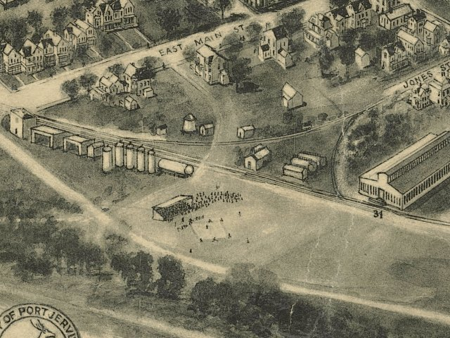

| Port Jervis, New York - 1920 |
|---|
 |
| Aero view of Port Jervis, New York 1920. Hughes & Fowler. CREATED/PUBLISHED Brooklyn, N.Y. [1920] NOTES Perspective map not drawn to scale. Bird's-eye-view. Oriented with north to the right. Includes illus., distance chart, index to points of interest, and business directory. REFERENCE LC Panoramic maps (2nd ed.), 620 |